Induction in sugar mixtures: GCS at the population level
Thomas Julou
February, 2025
In this notebook, we analyse the growth-coupled sensitivity of the lac operon to lactose, when E. coli grows on mixtures of glucose and lactose with different concentrations.

Analysing growth rates of induced and uninduced cells in each mixture
This analysis focuses on growth rates computed over full cell cycles. We consider all traces with 4 observations or more, after discarding the first 4 hours (where [LacZ-GFP] obviously adjusts due to environmental changes compared to preculture conditions).
We first establish an induction criteria. Computing the proportion of observation where [LacZ-GFP] > 250 yields clearly bimodal distribution with cells either induced or not, so one can reasonably stratify by this variable.
Note that while it could look appealing to stratify by the expression state of the lac operon (i.e. whether a cell has produced Lac proteins during the current cell cycle), what actually matters for growing on lactose is the current concentration on Lac proteins, hence the criteria used here.

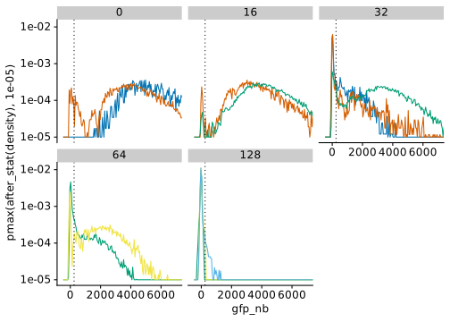
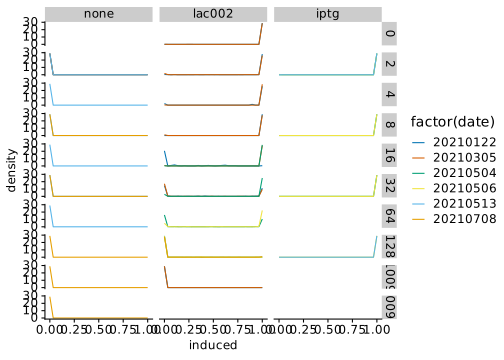
Time windows for steady state of induction
We first examine how the proportion of induced cells changes during the experiment in order to study it after the transient.

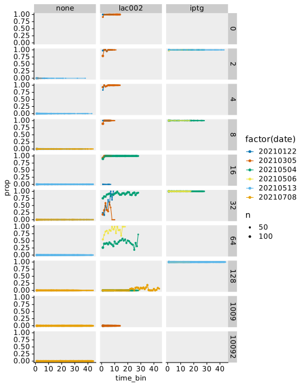
We note that the proportion of induced cells stabilises typically after 5 hours. We assume that this is the time needed to adjust to the new condition and filter out previous observations also for the glucose-only and iptg datasets. Let compute rates for the relevant time window.
## # A tibble: 1 × 3
## t n p
## <int> <int> <dbl>
## 1 36478 36716 0.00648Growth rate distributions
Let’s check growth rate distributions as a function of glucose concentration for different treatments.
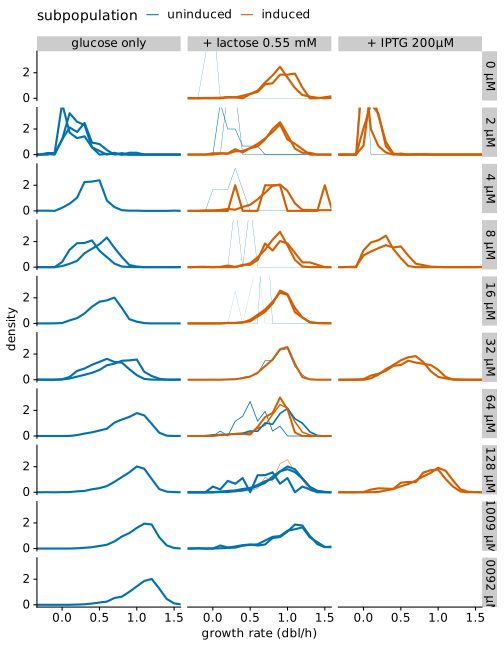
Growth controls
For glucose only, let’s verify that the growth rate does not depend on the position in the channel.
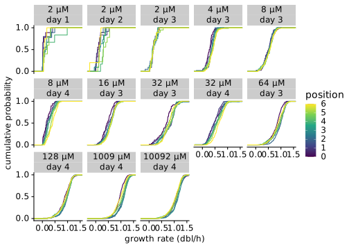
Let’s plot the instantaneous growth rate in M9 zero averaged in 1 h bins in order to check how much growth is possible without sugar.
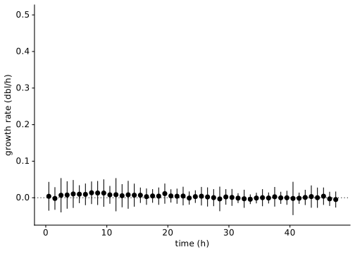
Proportion of induced cells
Let us compute the proportion of induced cells as a function of glucose concentration.
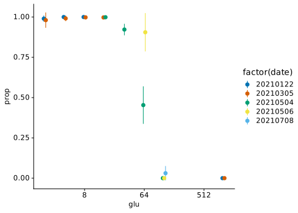
Fit a Hill function:
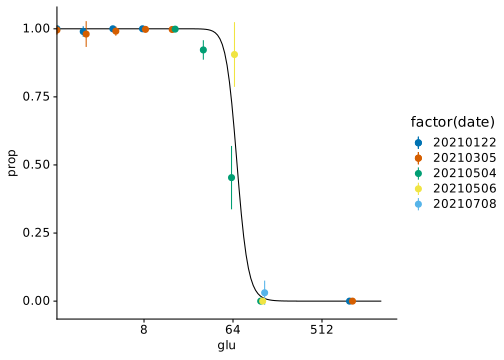
Growth rate dependence to glucose concentration
Summarizing growth rate dependence to glucose concentration.
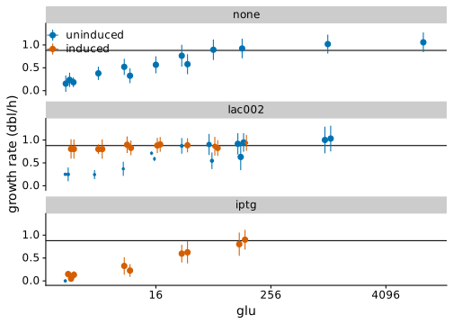
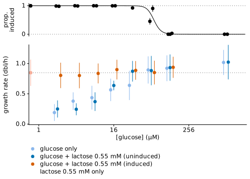
##
## Formula: gr_mean ~ .monod(glu, gr_max, glu_half)
##
## Parameters:
## Estimate Std. Error t value Pr(>|t|)
## gr_max 0.98155 0.05593 17.548 7.68e-09 ***
## glu_half 10.16213 2.07943 4.887 0.000635 ***
## ---
## Signif. codes: 0 '***' 0.001 '**' 0.01 '*' 0.05 '.' 0.1 ' ' 1
##
## Residual standard error: 0.08319 on 10 degrees of freedom
##
## Number of iterations to convergence: 8
## Achieved convergence tolerance: 1.997e-06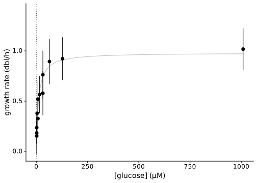
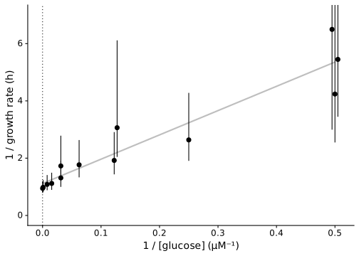
Analysing LacZ-GFP expression
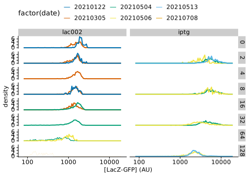
CRP regulation as a function of growth rate
First without correcting for bleaching.

Then correcting for bleaching assuming constant \(q\) and \(\lambda\). Hence \(c = c_u (1+\beta/\lambda)\). Note that we recover the so-called C-line of Hwa, et al.


In order to plot this in concentration units, one measures width at the different glucose concentrations.
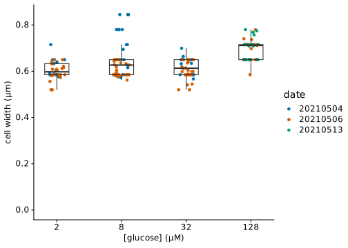
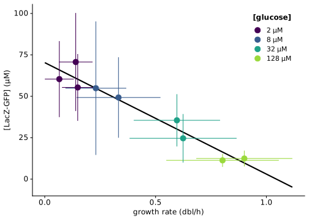
CRP regulation in single cells

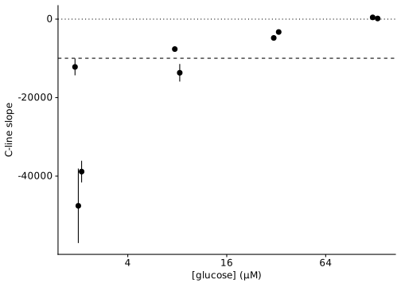